Добавяне на седмично разписание от класен ръководител
1. Вписваме се в Школо - shkolo.bg -> Дневник
2. Избираме дневник на класа:
2.1 Добавяне на разписание
-> Дневник -> паралелка -> седмично разписание ->
-> Добави
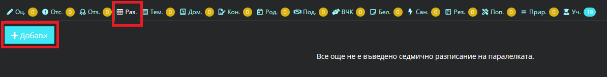
От дата: Начало на учебен срок
До дата: Край на учебен срок
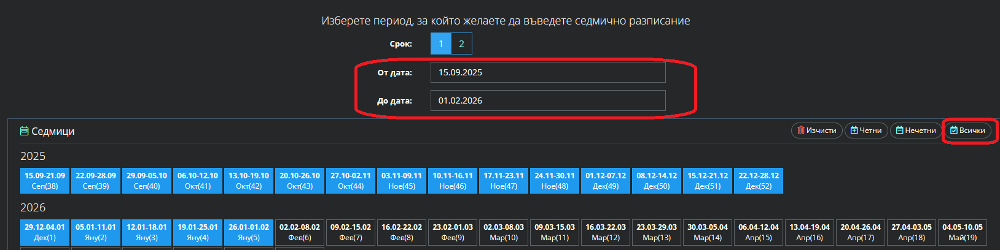
-> Запази и премини -> Режим -> Избираме подходящ режим: пример Смяна 2 Прогимназия
Смяна 1 - I и II клас
Смяна 1 - III и IV клас
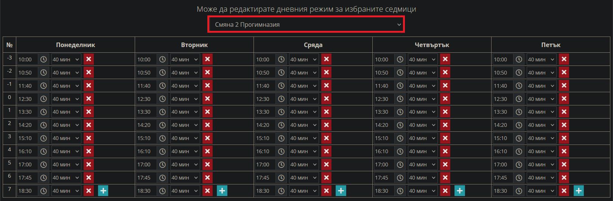
-> Добавяме всички учебни предмети от понеделник до петък за едната смяна -> Запази
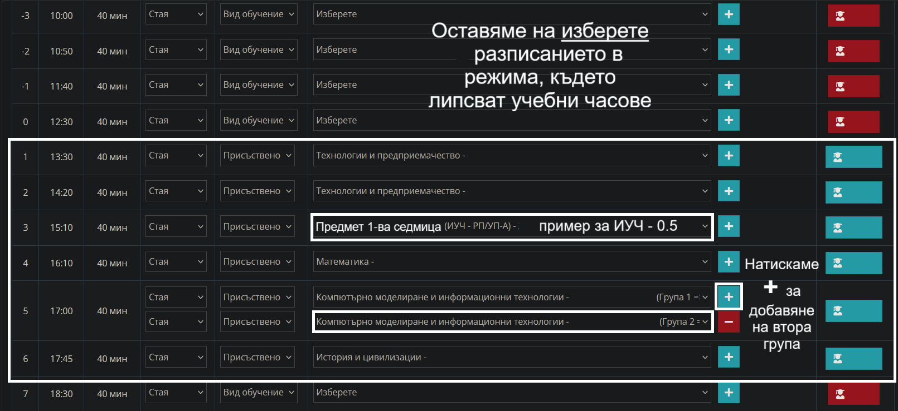
*Внимание първо добавете смяната и половинката (ИУЧ през седмица) валидна за първата учебна седмица за паралелката:
- за месец септември 1 срок / февруари 2 срок
- първата половинка ще бъде четна или нечетна
- после ще редактираме втората половинка, която ще е противоположна на първата - нечетна или четна.
2.2 Добавяне на втората смяна
-> Дневник -> паралелка -> седмично разписание ->
-> Редактирай
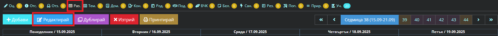
- Маркираме всички месеци, които ще бъдат с друга смяна, понеже само тях ще редактираме;
- например 1-ва смяна, обикновено смените се променят през месец;
- размаркират се месеците за 2-ра смяна, която вече сме задали;
- маркираните остават оцветени със син цвят.
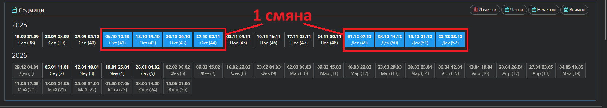
-> Запази и премини -> Режим -> Избираме режим за другата смяна: пример Смяна 1 Прогимназия
Смяна 2 - I и II клас
Смяна 2 - III и IV клас
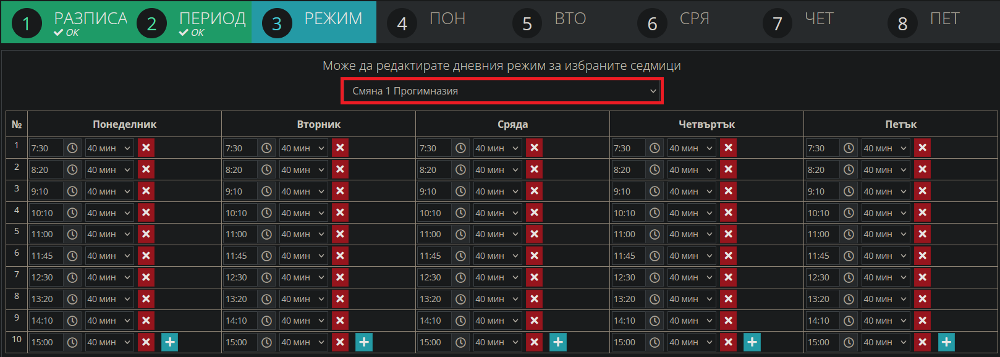
-> Правим промени на предметите (пример спортни дейности), които са били преди часовете във 2-ра смяна ->
-> Сега преминават например:
- от: 0. Час преди часовете, когато е 2-ра смяна
- към: 8. Час след часовете, когато е 1-ва смяна
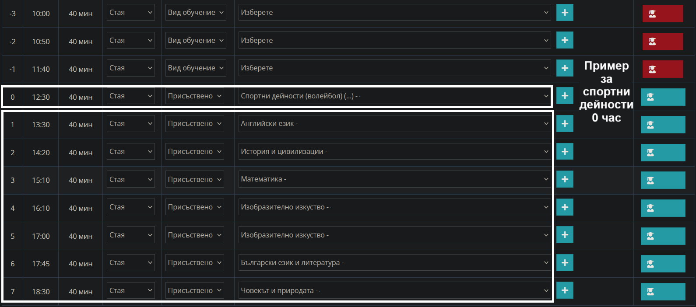
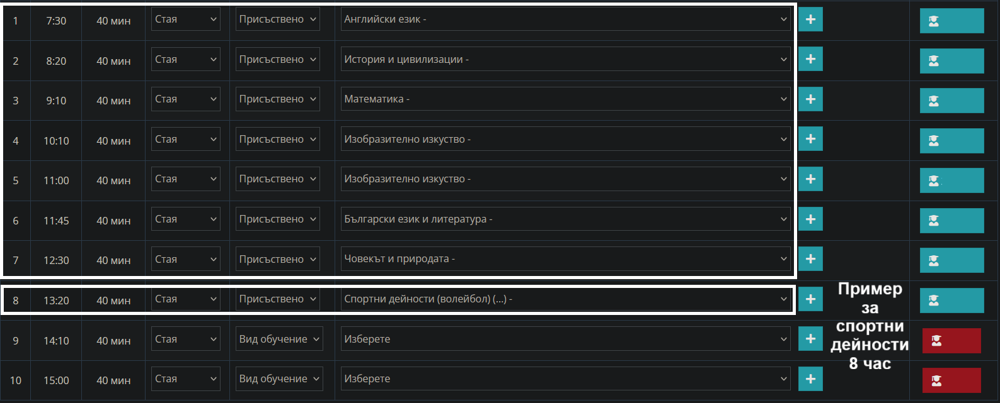
-> Редактираме учебните предмети от понеделник до петък за другата смяна -> Запази
-> Запази
2.3 Редактиране на половинките - часовете по ИУЧ, които са през седмица, започвайки от първата въведена смяна:
-> Дневник -> паралелка -> седмично разписание ->
-> Редактирай
Показан е примерът с втора смяна, която в случая е първа учебна смяна за прогимназия.
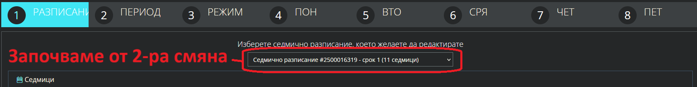
Маркираме от разписанията за съответната смяна на първи учебен месец, после за противоположната смяна.
- седмиците, които са четни или нечетни - съответни на втората учебна седмица от разписанието;
- повтаряме същото действие и за другата смяна, като ИУЧ половинките си остават еднакви - четни или нечетни
за втората учебна седмица и за двете смени.
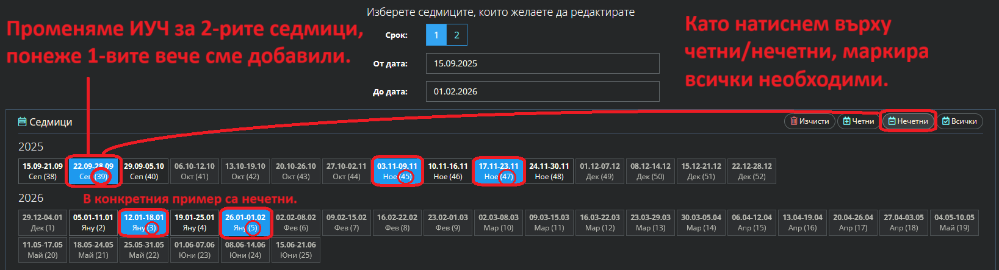
-> Запази и премини -> Режимът остава същият -> променяме:
- за всеки ден от седмицата половинките на ИУЧ за 2-рата учебна седмица;
- 1-вата седмица вече сме добавили в 2.1 и не е необходимо да редактираме.
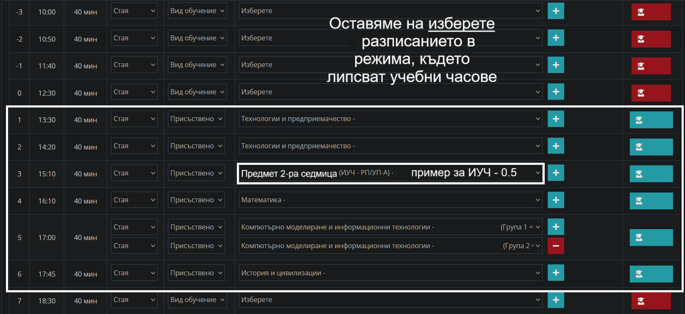
-> Запази и завърши
3. Проверяваме седмичното разписание за грешки и при необходимост редактираме.
Готово! Нашето седмично разписание е въведено успешно.